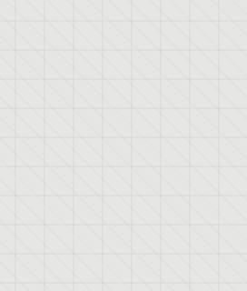
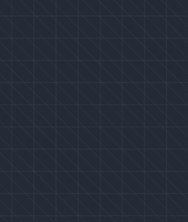
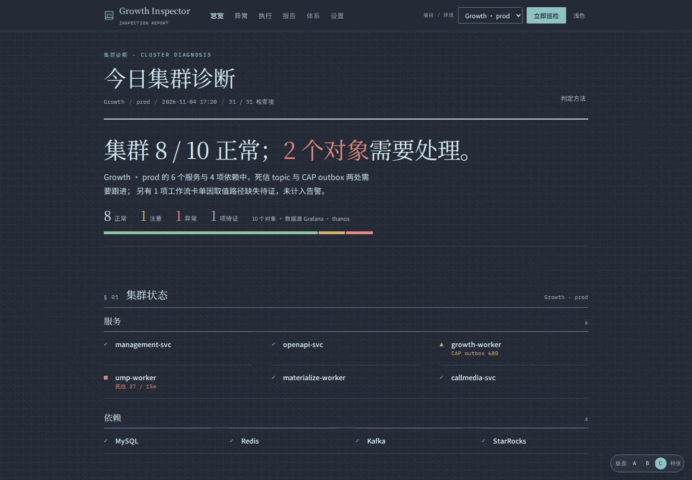

A
A 报告栏
1200 / 40px
1200 阅读宽度，表格横向滚动兜底，行高 40；默认候选。

Growth Inspector / Visual direction v0.2
3 种版面 × 3 个关键页，共 9 张静态样张；浅色 / 深色两套 token，可在任一页右上角切换。
目的是先拍版面（宽度、行高、章节间距），再落 /styleguide。所有数据为样张数据。
配套文档：style-spec.md（token / 字体 / 状态 / IA） · README.md（打开方式与评审清单）
点进任一版后，右下角可切 A/B/C；右上角可切深色 / 浅色。并排看：compare.html（总览 + 执行详情）。
对比度已算：浅色玄/丝绸灰 14.0:1、墨青 7.0:1、朱红 4.8:1、琥珀 4.8:1、通过绿 5.1:1；深色月白/烟墨 11.6:1、墨青 7.3:1、朱红 5.5:1、琥珀 7.0:1、通过绿 7.1:1。软底配对与徽章待 /styleguide 复核。
背景纹样：16px 经纬 + 8px 斜纹，约 3% 不透明度；深色用月白线。只铺页面底，不铺面板 / 正文，打印自动关闭。


巡检诊断：
每一条结论都有证据。
0fdf8154-66d8-4dea-be41-ef69da49b0c7 · 17:20:14 · 2.4 s
标题用 Noto Serif SC，正文用 Noto Sans SC，ID / 时间 / 数字用 IBM Plex Mono。中文行高按 Material 的 CJK 口径比西文 +0.1em；表格数字统一 tabular-nums。
字体均为 OFL，可自托管；样张已内嵌 woff2。
烟墨作底、月白作字；烟墨 #3B475B 同时作分隔线。深色下朱红提亮为 #E08A80、琥珀为 #D6B06A、通过绿为 #8EC3A0，墨青提亮为 #8FC3C3。

C 留白 · 已选 · 深色。也可以直接打开 深色样张，或点样张右上角「深色」切换。
通过；低饱和。
Warning；琥珀。
Abnormal / Critical；朱红。
Error / 证据不足；空心。
Pending / Skipped。
accent 脉冲。
朱红只给 Abnormal / Critical；Error / Mismatch / 证据不足统一为“待证”，空心、低饱和。Running 用 accent 脉冲，不占状态色。
缩略图为总览页顶部；点开卡片进入该版的总览，再用卡片内链接看执行详情与异常。重点看：宽表在 1280 / 1440 下是否要横向滚动、章节间距是否够、首屏结论是否立得住。
1200 / 40px
1200 阅读宽度，表格横向滚动兜底，行高 40；默认候选。
100% / 36px
边到边，行高 36；信息密度最高，适合宽表。

1120 / 48px
1120 窄栏，行高 48，章节间距 88；已选：更克制、密度更低。

A 报告栏：1200 宽 + 40 行高，最像“报告”；1440/1280 宽表可放下，≤1024 窄屏横向滚动。
B 全宽：边到边 + 36 行高，信息密度最高；首屏能放下更多行，但长文阅读会累。
C 留白（已选）：1120 宽 + 48 行高 + 88 章节间距；更克制、密度更低，宽表和长页面更长。
筛选/按钮不提交；主题切换与执行详情里的证据折叠可用。右上角“深色”按钮会切换整套 token，并记住选择。